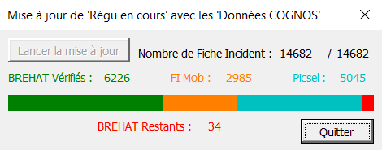

Voici un script que j'ai réaliser dans le cadre de mon travail.
Tous les jours, je collecte des données sur les incidents ferroviaires en provenance de trois sources : FiMob, Picsel et Brehat/Cognos. Les deux premières sont en général à jour lors de l'extraction à J+1, et ce qu'il reste peut être traité "manuellement". Brehat/Cognos, en revanche, peut évoluer pendant 15 jours aprés création d'un incident.
Le but de cette outil est de pouvoir rapidement mettre à jour notre base de données grâce à une extraction. Une petite interface permet de donner à l'utilisateur le nombres de données dans chaque catégorie.

''' _________________________________________________________________________________________________________________________________________
''' / \
'''( MISE A JOUR REGU EN COURS AVEC LES DONNEES COGNOS )
''' \_________________________________________________________________________________________________________________________________________/
''' _________________________________
''' / \________________________________________________________________________________________________________
'''/ PRESENTATION DE L'APPLICATION \_______________________________________________________________________________________________________\
''' _______________________________
'''/ DESCRIPTION \__________________________________________________________________________________________________________
'''
''' Le but de cette outil est comparer la base de données régu avec COGNOS afin de la mettre rapidement à jour notament pour les impacts
''' régularités. L'Applicaton va vérifier tous les éléments de la base Régu qui se trouve également dans COGNOS. En cas de différence, elle
''' remplacera la donnée régu par la donnée COGNOS. Pour finir elle fornira le résultat à l'utilisateur.
'''
''' _______________________________
'''/ SYNOPTIQUE ENTREES / SORTIE \__________________________________________________________________________________________________________
''' _________________
''' Regu en cours (pas à jour) --------> | |
''' | Application | --------> Regu en cours (à jour)
''' Données COGNOS --------> |_________________|
'''
''' _________________________________
''' / \________________________________________________________________________________________________________
'''/ ELEMENTS NOTABLES \_______________________________________________________________________________________________________\
''' _______________________________
'''/ FEUILLES EXCEL UTILESEES \__________________________________________________________________________________________________________
'''
''' Régu en cours ..................| Contient nos données des incidents quotidiens. Permet le lien entre BREHAT, FIMOB, PICSEL, REX SIG
''' | et les installations.
''' |
''' Données COGNOS .................| Extraction des données COGNOS effectuée chaque mois.
'''
''' NB : Lorsque nous intégrons les nouveaux COGNOS/BREHAT (il s'agit de la même base) tous les matins, il ne sont pas toujours clos.
''' Celà signifie qu'ils peuvent toujours faire de la régularité et que nous ne voyons pas. D'où l'importance de cette mise à jour.
'''
''' _______________________________
'''/ VARIABLES PUBLIQUES \__________________________________________________________________________________________________________
'''
''' Public Pub_Tbl_BREHAT() as Cl_BREHAT ...| Tableau Public contenant les éléments du tableau régu en cours (Voir Modules de Class BREHAT).
''' | La Déclaration se fait dans le Module_Régu.
''' | Le Remplissage se fait dans le Module_Régu dans la fonction Charger_BREHAT().
''' | Contient une entrée pour chaques lignes du fichier Régu en cours.
''' |
''' Public Pub_Tbl_COGNOS() as Cl_BREHAT ...| Tableau Public contenant des BREHAT (Voir Modules de Class BREHAT).
''' | La Déclaration se fait dans le Module_Régu.
''' | Le Remplissage se fait dans le Module_Régu dans la fonction Charger_COGNOS().
''' | Contient une entrée pour chaques lignes du fichier Données COGNOS dont les dates sont comprisent
''' | dans Pub_Tbl_BREHAT().
'''
''' _______________________________
'''/ ELEMENTS DU USERFORM \__________________________________________________________________________________________________________
'''
''' Bn_Ok ..........................| Bouton | Bouton permettant le lancement de la maj. Se désactive après ce lancement
''' Bn_Quit ........................| Bouton | Bouton permettant de quitter l'application proprement (Stop UserForm + Purge variables)
''' L_Nomb_Regu ....................| Label | Contient le nombre de fiches régu restantes à traiter
''' L_Total_BREHAT .................| Label | Contient le nombre de fiches régu total
''' L_Nomb_BREHAT ..................| Label | Contient le nombre de fiches BREHAT déjà traitées
''' L_Nomb_FIMOB ...................| Label | Contient le nombre de fiches FIMOB déjà traitées
''' L_Nomb_PICSEL ..................| Label | Contient le nombre de fiches PICSEL déjà traitées
''' L_Nomb_Restant .................| Label | Contient le nombre de fiches BREHAT restantes
''' L_Val_BREHAT ...................| Label | Rectangle Vert dont la largeur est représentative du taux de fiches BREHAT traité
''' L_Val_FIMOB ....................| Label | Rectangle Orange dont la largeur est représentative du taux de fiches FIMOB traité
''' L_Val_PICSEL ...................| Label | Rectangle Bleu dont la largeur est représentative du taux de fiches PICSEL traité
'''
''' _________________________________
''' / \________________________________________________________________________________________________________
'''/ LE PROGRAMME \_______________________________________________________________________________________________________\
''' _______________________________
'''/ INITIALISATION DU USERFORM \__________________________________________________________________________________________________________
'''
Private Sub UserForm_Initialize() ''' A l'initialisation de l'application :
L_Nomb_Regu.Caption = 0 ''' Mise à jour des compteurs
L_Total_BREHAT.Caption = UBound(Pub_Tbl_BREHAT)
L_Nomb_BREHAT.Caption = 0
L_Nomb_FIMOB.Caption = 0
L_Nomb_PICSEL.Caption = 0
L_Nomb_Restant.Caption = UBound(Pub_Tbl_BREHAT)
L_Val_BREHAT.width = 0 ''' Mise à jour des dimentions des barre de comptage
L_Val_FIMOB.width = 0
L_Val_PICSEL.width = 0
End Sub
''' _______________________________
'''/ LANCEMENT DE LA MISE A JOUR \__________________________________________________________________________________________________________
'''
Private Sub Bn_Ok_Click() ''' Lors de l'appuie sur le bouton "Lancer la mise à jour" :
Dim i As Integer ''' Compteur pour Pub_Tbl_BREHAT()
Dim j As Integer ''' Compteur pour Pub_Tbl_COGNOS()
Dim bh As Cl_BREHAT ''' Tampon pour BREHAT
Dim cg As Cl_BREHAT ''' Tampon pour COGNOS
'''
Bn_Ok.Enabled = False ''' Désactivation des boutons pour éviter de perturber le
Bn_Quit.Enabled = False ''' processus de mise à jour
'''
For i = 0 To UBound(Pub_Tbl_BREHAT) - 1 ''' Pour chaque élément régu :
Set bh = Pub_Tbl_BREHAT(i) ''' | On le place dans le tampon pour optimiser le code
If InStr(bh.Num_IO, "P") > 0 Then ''' | Si c'est un PICSEL,
L_Nomb_PICSEL.Caption = L_Nomb_PICSEL.Caption + 1 ''' | On l'ajoute au compte des PICSEL
ElseIf InStr(bh.Num_IO, "F") > 0 Then ''' | Si c'est une FIMOB,
L_Nomb_FIMOB.Caption = L_Nomb_FIMOB.Caption + 1 ''' | On l'ajoute au compte des FIMOB
Else ''' | Sinon, c'est un BREHAT.
For j = 0 To UBound(Pub_Tbl_COGNOS) - 1 ''' | On cherche donc le COGNOS correspondant,
Set cg = Pub_Tbl_COGNOS(j) ''' | | puis on corrige les erreurs
If bh.Num_IO = cg.Num_IO Then ''' | | et on incrémente le comte des BREHAT
If bh.Date_Debut <> cg.Date_Debut Then Pub_Tbxl_regu.Range.Cells(i + 2, 2).Value = cg.Date_Debut
If bh.PR_Debut <> cg.PR_Debut Then Pub_Tbxl_regu.Range.Cells(i + 2, 3).Value = cg.PR_Debut
If bh.PR_Fin <> cg.PR_Fin Then Pub_Tbxl_regu.Range.Cells(i + 2, 4).Value = cg.PR_Fin
If bh.Type_Ressource <> cg.Type_Ressource Then Pub_Tbxl_regu.Range.Cells(i + 2, 5).Value = cg.Type_Ressource
If bh.Indicateur <> cg.Indicateur Then Pub_Tbxl_regu.Range.Cells(i + 2, 6).Value = cg.Indicateur
If bh.Date_Fin <> cg.Date_Fin Then Pub_Tbxl_regu.Range.Cells(i + 2, 7).Value = cg.Date_Fin
If bh.Ressource <> cg.Ressource Then Pub_Tbxl_regu.Range.Cells(i + 2, 8).Value = cg.Ressource
If bh.Trains_Impactes <> cg.Trains_Impactes Then Pub_Tbxl_regu.Range.Cells(i + 2, 9).Value = cg.Trains_Impactes
If bh.Minutes_Perdues <> cg.Minutes_Perdues Then Pub_Tbxl_regu.Range.Cells(i + 2, 10).Value = cg.Minutes_Perdues
If bh.Trains_Supprimes <> cg.Trains_Supprimes Then Pub_Tbxl_regu.Range.Cells(i + 2, 11).Value = cg.Trains_Supprimes
If bh.Commentaires <> cg.Commentaires Then Pub_Tbxl_regu.Range.Cells(i + 2, 12).Value = cg.Commentaires
L_Nomb_BREHAT.Caption = L_Nomb_BREHAT.Caption + 1
Exit For ''' |
End If ''' |
Next j ''' |
End If ''' |
L_Nomb_Regu.Caption = i + 1 ''' |
If i Mod 97 = 0 Then ''' | de temps à autre on remet à jour l'affichage
L_Nomb_Restant.Caption = L_Total_BREHAT.Caption - L_Nomb_Regu.Caption
L_Val_BREHAT.width = 270 * (L_Nomb_BREHAT.Caption / L_Total_BREHAT.Caption)
L_Val_FIMOB.left = L_Val_BREHAT.left + L_Val_BREHAT.width
L_Val_FIMOB.width = 270 * (L_Nomb_FIMOB.Caption / L_Total_BREHAT.Caption)
L_Val_PICSEL.left = L_Val_FIMOB.left + L_Val_FIMOB.width
L_Val_PICSEL.width = 270 * (L_Nomb_PICSEL.Caption / L_Total_BREHAT.Caption)
Uf_Maj_COGNOS.Repaint
End If
Next i
Bn_Quit.Enabled = True ''' on réactive le bouton "Quitter"
End Sub
''' _______________________________
'''/ QUITTER L'APPLICATION \__________________________________________________________________________________________________________
'''
Private Sub Bn_Quit_Click() ''' Lors de l'appuie sur le bouton "Quitter" :
Unload Uf_Maj_COGNOS
End Sub